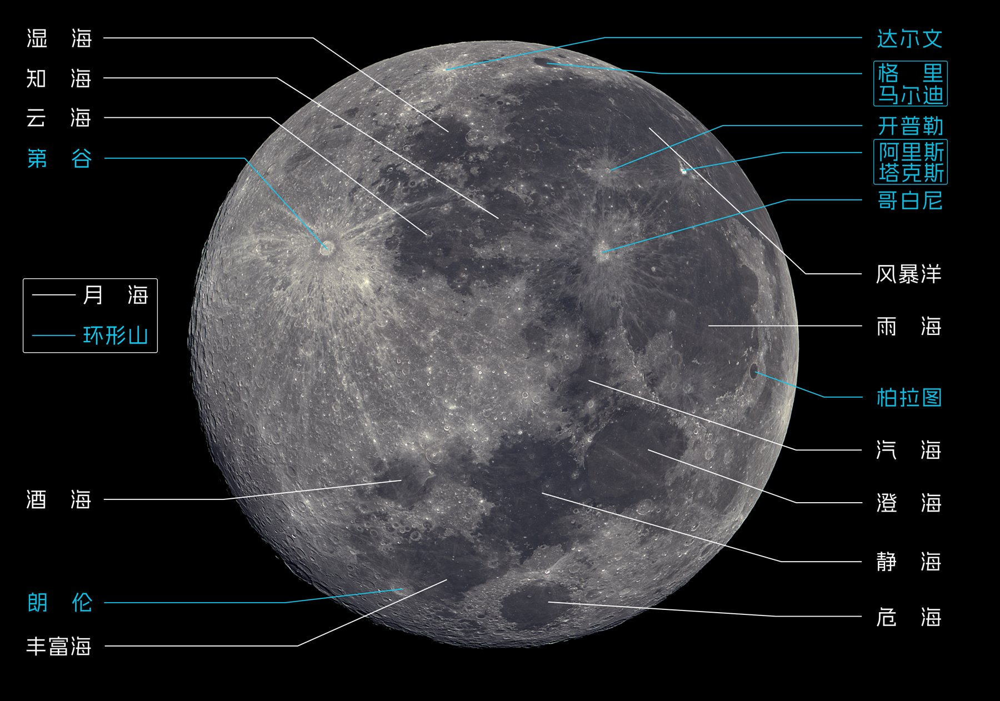
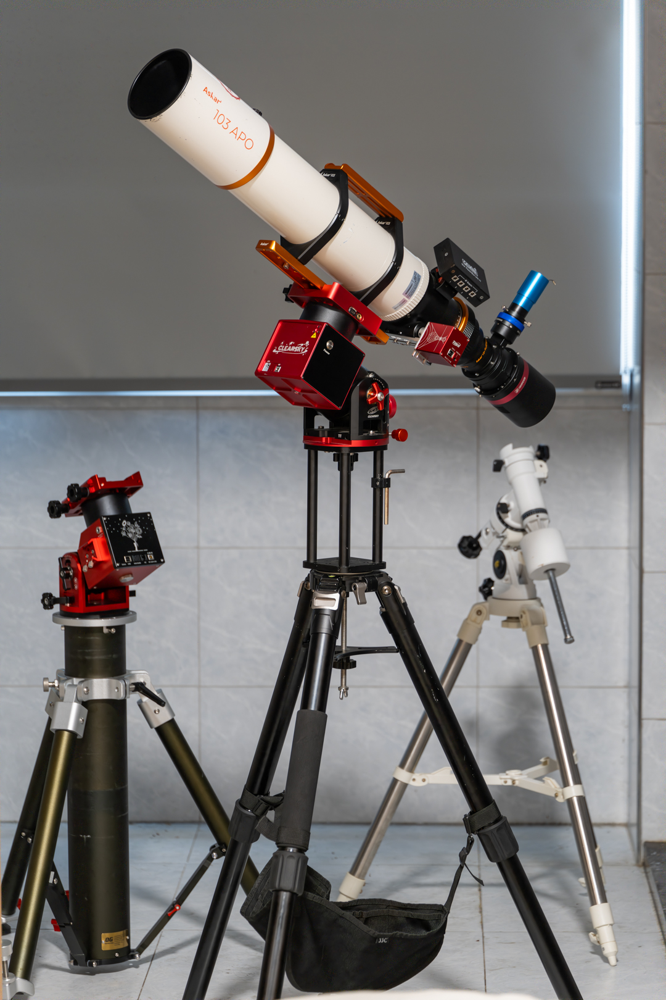

三个赛道
三项荣誉
- A1 星野相机赛道优秀奖《坠入地球的银河子民》
- B1 天体·日月行星赛道三等奖《月与血月》
- B2 天体·深空天体赛道优秀奖《深空》
PROFILE / 关于
江南大学智能制造学院
2023级机器人工程专业
天见天文协会创始人、会长
初涉天文时走过的弯路，萌生了创立社团的想法。天见天文协会为天文与摄影爱好者搭建交流平台，普及天文知识，分享深空摄影实践。
天见天文
2025年7月14日，天见天文协会正式成立，成为江南大学江阴霞客湾校区第一个“土生土长”的学生兴趣类社团。在周敏宁教授指导下，PlutonoC 与同学们把对宇宙的好奇，变成了一群人的共同探索。
我们希望能帮助更多喜爱星空的同学少走弯路，一起感受宇宙的浩瀚与神秘
OBSERVATION LOG / 追星历程

从校园操场开始，近十次仰望与拍摄，让观测成为可以与同学共享的日常。自制月面地图也诞生于这里。
PHOTOGRAPHY / 摄影作品
54 幅作品
按拍摄类型归档
MOTION / 动态影像
行星自转、天象过程与观测现场。点击封面进入播放器。
正在读取影像资料
ARCHIVE / 记录与荣誉
公开报道、作品发表与赛事记录

EQUIPMENT / 设备
主镜 锐星 103APO / 星特朗 C925HD
相机 QHY 268C
赤道仪 晴空 ST20R
导星 QHY OAG-M PRO / 图谱 290C
滤镜 宇隆 L-eXtreme / 锐星 D2 / XIMEI 红外截止
相机 松下 S5M2 / 海鸥 4A / 宾得 K100D
镜头 松下 70-300 / 松下 20-60 / 维卓仕 16mm F1.8
其他 DJI Mavic 2 Pro / DJI RS3 / Fotopro 脚架
CONTACT / 联系
持续记录天文观测、深空摄影与动态影像